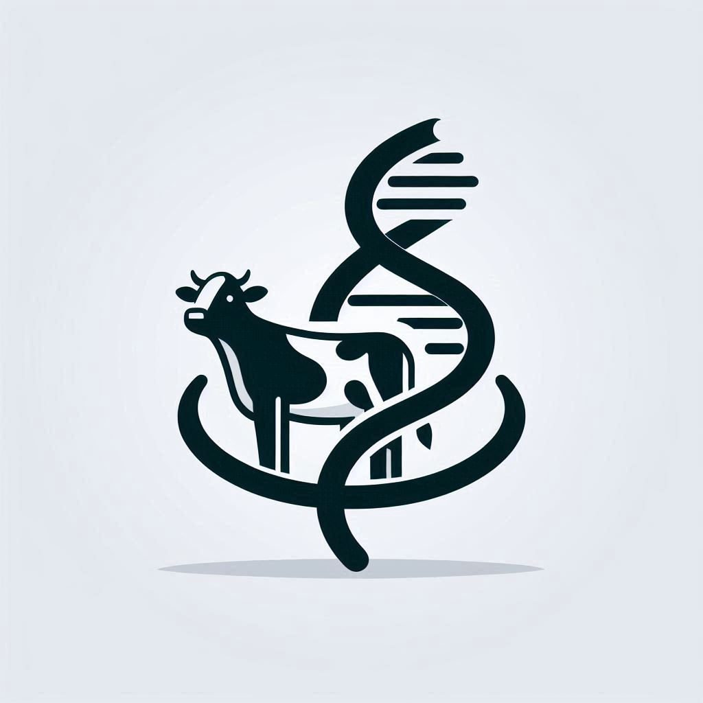
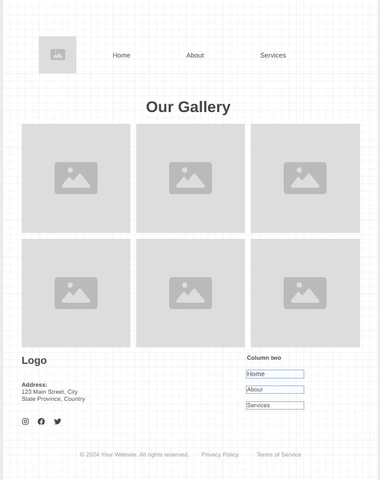

Overview
Purpose
Create a functional website for Forefront Genetics
Audience
Farmers and ranchers seeking AI for their herd
Dynamic elements
[Describe dynamic elements provided by Javascript here]
Branding
Website Logo
Style Guide
Color Palette
Palette URL: https://coolors.co/396e94-e7c24f-a43312-381d2a-aabd8c| Primary | Secondary | Accent 1 | Accent 2 |
|---|---|---|---|
| [#DC143C] | [#808080] | [#FAF9F6] |
Typography
Heading Font: Parkinsans
Paragraph Font: Lora
Normal paragraph example
Welcome to Forefront Genetics At Forefront Genetics, we're revolutionizing the agriculture industry with state-of-the-art artificial intelligence solutions designed specifically for cattle management. Our advanced technology leverages AI and genetic insights to optimize herd health, enhance productivity, and ensure sustainable farming practices. Our Mission Our mission is to empower farmers and ranchers with cutting-edge tools that provide real-time data and actionable insights. By integrating AI with traditional farming, we aim to improve livestock welfare, streamline operations, and boost profitability.
Colored paragraph example
Innovative Solutions Health Monitoring: Our AI-driven health monitoring system detects early signs of illness, allowing for timely intervention and reducing veterinary costs. Genetic Optimization: Using DNA analysis, we identify the best breeding pairs to enhance herd genetics and increase overall productivity. Smart Feeding: Our smart feeding systems ensure each animal receives the optimal nutrition based on their health and growth stages. Join the Future of Farming Partner with Forefront Genetics and step into the future of cattle farming. Our innovative solutions are designed to make your operations more efficient, sustainable, and profitable. Experience the difference that intelligent technology can make for your herd.
Navigation
Content
Home page
*Image carosoul
Services
*Forms and dropdown selectors*
Wireframes
Create two wireframes for your site. One for each page and list them here
Home
The gallery will be a carosoul of images. The images will be of cows. This will be made possible by Javascript
About
The pictures will rotate back and forth, to show different pictures and which one is infront.

Services
On this page the drop down box will have an option to select get in contact or send a message. Depending on what is clicked different forms will be inserted using Javascript.